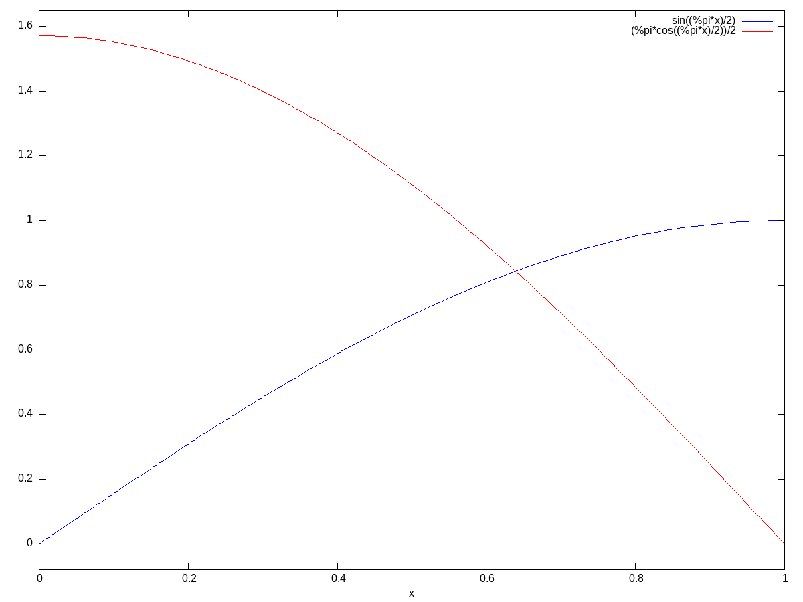

\( \DeclareMathOperator{\abs}{abs} \newcommand{\ensuremath}[1]{\mbox{$#1$}} \)
| (%i2) |
/*
For a constant acceleration ramp the steps and speed at time t can be calculated by: */ s ( t , a ) : = 1 / 2 · a · t ^ 2 ; v ( t , a ) : = a · t ; |
\[\operatorname{ }\operatorname{s}\left( t\operatorname{,}a\right) \operatorname{:=}\frac{1}{2} a {{t}^{2}}\]
\[\operatorname{ }\operatorname{v}\left( t\operatorname{,}a\right) \operatorname{:=}a t\]
| (%i3) |
/*
The time at a given step is then */ t ( s , a ) : = sqrt ( 2 · s / a ) ; |
\[\operatorname{ }\operatorname{t}\left( s\operatorname{,}a\right) \operatorname{:=}\sqrt{\frac{2 s}{a}}\]
| (%i4) |
/*
and the speed at a given step is then */ v ( s , a ) : = sqrt ( 2 · s · a ) ; |
\[\operatorname{ }\operatorname{v}\left( s\operatorname{,}a\right) \operatorname{:=}\sqrt{2 s a}\]
| (%i5) |
/*
and finally the step rate R (time distance between two pulses): */ R ( s , a ) : = 1 / sqrt ( 2 · s · a ) ; |
\[\operatorname{ }\operatorname{R}\left( s\operatorname{,}a\right) \operatorname{:=}\frac{1}{\sqrt{2 s a}}\]
| (%i6) |
/*
With s_ramp being the number of steps to accelerate or decelerate and s_total being the number of the steps for the total ramp including acceleration and deceleration, the complete ramp with acceleration, coasting and deceleration can be written as */ v ( s , a , s_ramp , s_total ) : = if s < s_ramp then sqrt ( 2 · s · a ) else if s < s_total − s_ramp then sqrt ( 2 · s_ramp · a ) else if s < s_total then sqrt ( 2 · ( s_total − s ) · a ) else 0 $ |
| (%i7) |
/*
And the acceleration over steps is simply */ a ( s , a , s_ramp , s_total ) : = if s < s_ramp then a else if s < s_total − s_ramp then 0 else if s < s_total then − a else 0 $ |
| (%i8) |
/*
As an example the acceleration over steps for acceleration = 5 m/s², ramp steps = 100 and total ramp steps = 1000: */ wxplot2d ( [ a ( s , 5 , 100 , 1000 ) ] , [ s , 0 , 1000 ] ) ; |
\[\operatorname{ }\]

\[\operatorname{ }\]
| (%i9) | wxplot2d ( [ v ( s , 5 , 100 , 1000 ) ] , [ s , 0 , 1000 ] ) ; |
\[\operatorname{ }\]
\[\operatorname{ }\]
| (%i10) |
/*
In order to generalize the ramp function, we introduce a dimensionless function f, which translates from range [0,1] into the range [0,1]. */ v ( s ) : = v_max · f ( s / s_ramp ) ; |
\[\operatorname{ }\operatorname{v}(s)\operatorname{:=}{v_{\ensuremath{\mathrm{max}}}} \operatorname{f}\left( \frac{s}{{s_{\ensuremath{\mathrm{ramp}}}}}\right) \]
| (%i11) |
/*
The first derivate of v aka v_1 is with df/fx = f_1: */ v_1 ( s ) : = v_max / s_ramp · f_1 ( s / s_ramp ) ; |
\[\operatorname{ }\operatorname{v\_ 1}(s)\operatorname{:=}\frac{{v_{\ensuremath{\mathrm{max}}}}}{{s_{\ensuremath{\mathrm{ramp}}}}} {f_1}\left( \frac{s}{{s_{\ensuremath{\mathrm{ramp}}}}}\right) \]
| (%i12) |
/*
Using this definition, the acceleration a(s) can be approximated at steps s: */ a ( s ) : = v_1 ( s ) · v ( s ) ; |
\[\operatorname{ }\operatorname{a}(s)\operatorname{:=}\operatorname{v\_ 1}(s) \operatorname{v}(s)\]
| (%i13) |
/*
With these two functions a(s) is: */ a ( s ) ; |
\[\operatorname{ }\frac{\operatorname{f}\left( \frac{s}{{s_{\ensuremath{\mathrm{ramp}}}}}\right) {f_1}\left( \frac{s}{{s_{\ensuremath{\mathrm{ramp}}}}}\right) {{{v_{\ensuremath{\mathrm{max}}}}}^{2}}}{{s_{\ensuremath{\mathrm{ramp}}}}}\]
| (%i15) |
/*
Now we need a mathematical function, which can be used to define a smooth acceleration ramp without jumps. Here we have the smoothstep function with its first derivative: */ f ( x ) : = 3 · x ² − 2 · x ³ ; diff ( f ( x ) , x ) ; |
\[\operatorname{ }\operatorname{f}(x)\operatorname{:=}3 {{x}^{2}}-2 {{x}^{3}}\]
\[\operatorname{ }6 x-6 {{x}^{2}}\]
| (%i16) |
/*
So the first derivative is simply */ f_1 ( x ) : = 6 · x − 6 · x ^ 2 ; |
\[\operatorname{ }\operatorname{f\_ 1}(x)\operatorname{:=}6 x-6 {{x}^{2}}\]
| (%i17) |
/*
Drawn over the x-range from 0 to 1: */ wxplot2d ( [ f ( x ) , f_1 ( x ) ] , [ x , 0 , 1 ] ) ; |
\[\operatorname{ }\]
\[\operatorname{ }\]
| (%i19) |
/*
How does this apply to our functions v and a as dependent from step s ? */ fundef ( v ) ; fundef ( a ) ; |
\[\operatorname{ }\operatorname{v}(s)\operatorname{:=}{v_{\ensuremath{\mathrm{max}}}} \operatorname{f}\left( \frac{s}{{s_{\ensuremath{\mathrm{ramp}}}}}\right) \]
\[\operatorname{ }\operatorname{a}(s)\operatorname{:=}\operatorname{v\_ 1}(s) \operatorname{v}(s)\]
| (%i20) |
/*
With this the function to calculate the acceleration is (with constant factors eliminated): */ expand ( a ( s ) ) ; |
\[\operatorname{ }\frac{18 {{s}^{3}} {{{v_{\ensuremath{\mathrm{max}}}}}^{2}}}{{{{s_{\ensuremath{\mathrm{ramp}}}}}^{4}}}-\frac{30 {{s}^{4}} {{{v_{\ensuremath{\mathrm{max}}}}}^{2}}}{{{{s_{\ensuremath{\mathrm{ramp}}}}}^{5}}}+\frac{12 {{s}^{5}} {{{v_{\ensuremath{\mathrm{max}}}}}^{2}}}{{{{s_{\ensuremath{\mathrm{ramp}}}}}^{6}}}\]
| (%i21) |
/*
The shape of a(s) is: */ wxplot2d ( [ f ( x ) · f_1 ( x ) ] , [ x , 0 , 1 ] ) ; |
\[\operatorname{ }\]
\[\operatorname{ }\]
| (%i23) |
/*
The maximum of this function is c at x_c (evaluated with wolframalpha) */ c : 3 / 250 · ( 34 · sqrt ( 10 ) − 25 ) ; x_c : 1 − 1 / sqrt ( 10 ) ; |
\[\operatorname{ }\frac{3 \left( 34 \sqrt{10}-25\right) }{250}\]
\[\operatorname{ }1-\frac{1}{\sqrt{10}}\]
| (%i24) |
/*
The maximum value of the function is nearly one, so we just ignore it */ float ( c ) ; |
\[\operatorname{ }0.9902092853486988\]
| (%i25) |
/*
Consequently the maximum acceleration is: */ a_max = v_max ² / s_ramp ; |
\[\operatorname{ }{a_{\ensuremath{\mathrm{max}}}}=\frac{{{{v_{\ensuremath{\mathrm{max}}}}}^{2}}}{{s_{\ensuremath{\mathrm{ramp}}}}}\]
| (%i26) |
/*
In FastAccelStepper maximum acceleration and maximum speed are configured, so this equation can be used to determine s_ramp. */ ref : s_ramp = v_max ² / a_max ; |
\[\operatorname{ }{s_{\ensuremath{\mathrm{ramp}}}}=\frac{{{{v_{\ensuremath{\mathrm{max}}}}}^{2}}}{{a_{\ensuremath{\mathrm{max}}}}}\]
| --> |
/*
This is double the value of using constant acceleration. */ ; |
| (%i27) |
/*
The speed at steps s = 1 is: */ ev ( v ( s ) , s = 1 ) ; |
\[\operatorname{ }\left( \frac{3}{{{{s_{\ensuremath{\mathrm{ramp}}}}}^{2}}}-\frac{2}{{{{s_{\ensuremath{\mathrm{ramp}}}}}^{3}}}\right) {v_{\ensuremath{\mathrm{max}}}}\]
Created with wxMaxima.
The source of this Maxima session can be downloaded here.